%matplotlib inline
import matplotlib.pyplot as plt
import seaborn
seaborn.set(style='ticks')
from IPython.display import Audio
import numpy as np
import scipy
import mir_eval
import librosa
import librosa.displayFrom https://www.youtube.com/watch?v=MhOdbtPhbLU in 2015
I also copy & paste some captures (they look weird) to see how different it was 5 years a go.
y,sr = librosa.load(librosa.util.example_audio_file())
Important
I removed all the outputs of Audio(data=,rate=) because the notebook was more than 19Mb total
Audio(data=y,rate=sr) # cleaned just to lower size of notebook (run again to see embeded player)waveform
librosa.display.waveplot(y, sr)<matplotlib.collections.PolyCollection at 0x7fcb930f68b0>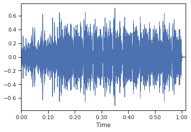
spectrograms
D = librosa.stft(y)
D.shape(1025, 2647)log_spectrogram = librosa.power_to_db(D**2, ref=np.max)
log_spectrogram.shape/home/tyoc213/miniconda3/envs/fastai/lib/python3.8/site-packages/librosa/core/spectrum.py:1544: UserWarning: power_to_db was called on complex input so phase information will be discarded. To suppress this warning, call power_to_db(np.abs(D)**2) instead.
warnings.warn((1025, 2647)librosa.display.specshow(log_spectrogram, x_axis='time', y_axis='linear')
plt.colorbar()<matplotlib.colorbar.Colorbar at 0x7fcb93009370>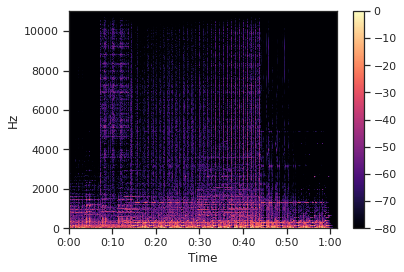
librosa.display.specshow(log_spectrogram, x_axis='time', y_axis='log')
plt.colorbar()/home/tyoc213/miniconda3/envs/fastai/lib/python3.8/site-packages/librosa/display.py:974: MatplotlibDeprecationWarning: The 'basey' parameter of __init__() has been renamed 'base' since Matplotlib 3.3; support for the old name will be dropped two minor releases later.
scaler(mode, **kwargs)
/home/tyoc213/miniconda3/envs/fastai/lib/python3.8/site-packages/librosa/display.py:974: MatplotlibDeprecationWarning: The 'linthreshy' parameter of __init__() has been renamed 'linthresh' since Matplotlib 3.3; support for the old name will be dropped two minor releases later.
scaler(mode, **kwargs)
/home/tyoc213/miniconda3/envs/fastai/lib/python3.8/site-packages/librosa/display.py:974: MatplotlibDeprecationWarning: The 'linscaley' parameter of __init__() has been renamed 'linscale' since Matplotlib 3.3; support for the old name will be dropped two minor releases later.
scaler(mode, **kwargs)<matplotlib.colorbar.Colorbar at 0x7fcb92f4e0a0>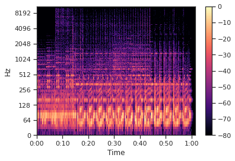
Constant q transform
direct log-frecuency analysis?
C = librosa.cqt(y, sr)
C.shape(84, 2647)librosa.display.specshow(librosa.amplitude_to_db(C**2), x_axis='time', y_axis='cqt_hz')
plt.colorbar()/home/tyoc213/miniconda3/envs/fastai/lib/python3.8/site-packages/librosa/core/spectrum.py:1641: UserWarning: amplitude_to_db was called on complex input so phase information will be discarded. To suppress this warning, call amplitude_to_db(np.abs(S)) instead.
warnings.warn(<matplotlib.colorbar.Colorbar at 0x7fcb92e887c0>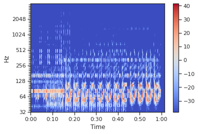
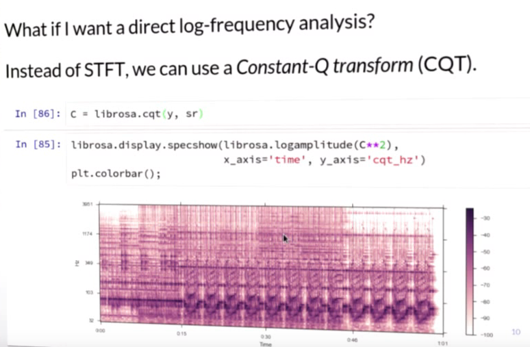
librosa.display.specshow(librosa.amplitude_to_db(C**2, top_db=40), x_axis='time', y_axis='cqt_note')
plt.colorbar()<matplotlib.colorbar.Colorbar at 0x7fcb92d0f0d0>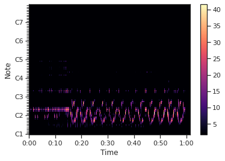
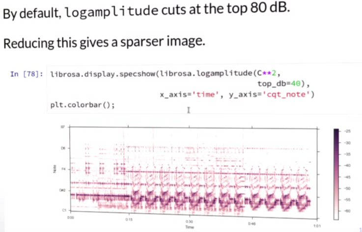
Spectral features
Spectral features are often used to analyze harmony or timbre.
Usually the product of a spectrogram and a filter bank.
pitch vs class
CQT measures the energy in each pitch.
Chroma measures the energy in each pitch class.
chroma = librosa.feature.chroma_cqt(C=C, sr=sr)
chroma.shape(12, 2647)librosa.display.specshow(chroma, x_axis='time', y_axis='chroma')
plt.colorbar()/home/tyoc213/miniconda3/envs/fastai/lib/python3.8/site-packages/librosa/display.py:822: UserWarning: Trying to display complex-valued input. Showing magnitude instead.
warnings.warn(<matplotlib.colorbar.Colorbar at 0x7fcb906852b0>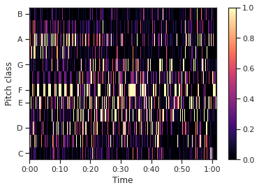
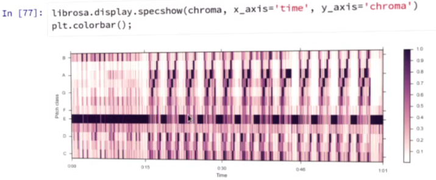
Other spectral features includes MEL spectra, MFCC and Tonnetz
M = librosa.feature.melspectrogram(y=y, sr=sr)
MFCC = librosa.feature.mfcc(y=y, sr=sr)
tonnetz = librosa.feature.tonnetz(y=y, sr=sr)Audio effects
y_harmonic, y_percussive = librosa.effects.hpss(y)Audio(data=y, rate=sr)Audio(data=y_harmonic, rate=sr)Audio(data=y_percussive, rate=sr)plt.figure(figsize=(12,6))
C_harmonic = librosa.cqt(y_harmonic, sr)
C_perc = librosa.cqt(y_percussive, sr)
plt.subplot(3,1,1), librosa.display.specshow(C**(1./3), y_axis='cqt_hz'), plt.colorbar()
plt.subplot(3,1,2), librosa.display.specshow(C_harmonic**(1./3), y_axis='cqt_hz'), plt.colorbar()
plt.subplot(3,1,3), librosa.display.specshow(C_perc**(1./3), y_axis='cqt_hz'), plt.colorbar()(<AxesSubplot:ylabel='Hz'>,
<matplotlib.collections.QuadMesh at 0x7fcb92d88d90>,
<matplotlib.colorbar.Colorbar at 0x7fcb92df3a00>)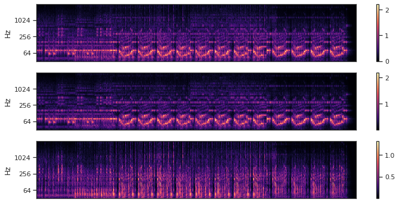
Onsets and beats
onset_envelope = librosa.onset.onset_strength(y, sr)onsets = librosa.onset.onset_detect(onset_envelope=onset_envelope)plt.subplot(2,1,1)
plt.plot(onset_envelope, label='Onset strength')
plt.vlines(onsets, 0, onset_envelope.max(), color='r', alpha=0.25, label='onsets')
plt.xticks([]), plt.yticks([])
plt.legend(frameon=True)
plt.axis('tight')
plt.subplot(2,1,2)
librosa.display.waveplot(y, sr)<matplotlib.collections.PolyCollection at 0x7fcb93b6a220>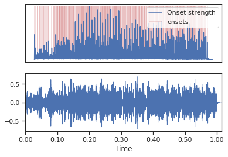
onset stregth is used to track beats and estimate tempo
tempo, beats = librosa.beat.beat_track(onset_envelope=onset_envelope)
tempo, beats(129.19921875,
array([ 4, 23, 43, 63, 83, 102, 122, 142, 162, 181, 202,
222, 242, 261, 281, 301, 321, 341, 361, 382, 401, 421,
441, 461, 480, 500, 520, 540, 560, 579, 600, 620, 639,
658, 678, 698, 718, 737, 757, 777, 798, 817, 837, 857,
877, 896, 916, 936, 957, 976, 996, 1016, 1036, 1055, 1075,
1095, 1116, 1135, 1155, 1175, 1195, 1214, 1234, 1254, 1275, 1294,
1314, 1334, 1354, 1373, 1393, 1413, 1434, 1453, 1473, 1493, 1513,
1532, 1552, 1572, 1593, 1612, 1632, 1652, 1672, 1691, 1712, 1732,
1752, 1771, 1791, 1811, 1831, 1850, 1870, 1890, 1911, 1931, 1951,
1971, 1990, 2010, 2030, 2050, 2070, 2090, 2110, 2130, 2149, 2169,
2189, 2209, 2229, 2249, 2269, 2288, 2308, 2328, 2348, 2368, 2388,
2408, 2428, 2448, 2467, 2487, 2507, 2527, 2547]))plt.plot(onset_envelope, label='Onset strength')
plt.vlines(onsets, 0, onset_envelope.max(), color='r', alpha=0.25, label='onsets')
plt.xticks([]), plt.yticks([])
plt.legend(frameon=True)
plt.axis('tight')(-132.3, 2778.3, -0.05, 1.05)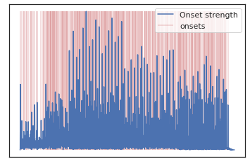
beat events are in frame indices
We can convert to time (in seconds), and sonify with mir_eval
beat_times = librosa.frames_to_time(beats)
beat_timesarray([ 0.09287982, 0.53405896, 0.99845805, 1.46285714, 1.92725624,
2.36843537, 2.83283447, 3.29723356, 3.76163265, 4.20281179,
4.69043084, 5.15482993, 5.61922902, 6.06040816, 6.52480726,
6.98920635, 7.45360544, 7.91800454, 8.38240363, 8.87002268,
9.31120181, 9.77560091, 10.24 , 10.70439909, 11.14557823,
11.60997732, 12.07437642, 12.53877551, 13.0031746 , 13.44435374,
13.93197279, 14.39637188, 14.83755102, 15.27873016, 15.74312925,
16.20752834, 16.67192744, 17.11310658, 17.57750567, 18.04190476,
18.52952381, 18.97070295, 19.43510204, 19.89950113, 20.36390023,
20.80507937, 21.26947846, 21.73387755, 22.2214966 , 22.66267574,
23.12707483, 23.59147392, 24.05587302, 24.49705215, 24.96145125,
25.42585034, 25.91346939, 26.35464853, 26.81904762, 27.28344671,
27.7478458 , 28.18902494, 28.65342404, 29.11782313, 29.60544218,
30.04662132, 30.51102041, 30.9754195 , 31.43981859, 31.88099773,
32.34539683, 32.80979592, 33.29741497, 33.7385941 , 34.2029932 ,
34.66739229, 35.13179138, 35.57297052, 36.03736961, 36.50176871,
36.98938776, 37.43056689, 37.89496599, 38.35936508, 38.82376417,
39.26494331, 39.75256236, 40.21696145, 40.68136054, 41.12253968,
41.58693878, 42.05133787, 42.51573696, 42.9569161 , 43.42131519,
43.88571429, 44.37333333, 44.83773243, 45.30213152, 45.76653061,
46.20770975, 46.67210884, 47.13650794, 47.60090703, 48.06530612,
48.52970522, 48.99410431, 49.4585034 , 49.89968254, 50.36408163,
50.82848073, 51.29287982, 51.75727891, 52.221678 , 52.6860771 ,
53.12725624, 53.59165533, 54.05605442, 54.52045351, 54.98485261,
55.4492517 , 55.91365079, 56.37804989, 56.84244898, 57.28362812,
57.74802721, 58.2124263 , 58.6768254 , 59.14122449])y_click = mir_eval.sonify.clicks(beat_times, sr, length=len(y))
Audio(data=y+y_click, rate=sr)Temporal structure
c_sync = librosa.util.sync(chroma, beats, aggregate=np.median)
c_sync.shape(12, 130)librosa.display.specshow(c_sync, y_axis='chroma')
plt.colorbar()/home/tyoc213/miniconda3/envs/fastai/lib/python3.8/site-packages/librosa/display.py:822: UserWarning: Trying to display complex-valued input. Showing magnitude instead.
warnings.warn(<matplotlib.colorbar.Colorbar at 0x7fcb904d6100>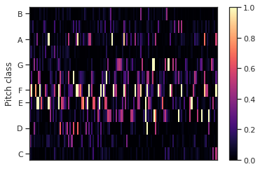
history embedding can add context
chroma_stack = librosa.feature.stack_memory(c_sync, n_steps=3, mode='edge')
chroma_stack.shape(36, 130)librosa.display.specshow(chroma_stack, y_axis='chroma')
plt.colorbar()<matplotlib.colorbar.Colorbar at 0x7fcb903be0d0>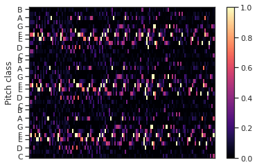
recurrence plots show nearest neighbor linkage for each frame.
Chroma recurrence can encode harmonic repetitions
# cant run this cell, it eats up 32 Gb physical memory + 37 Gb of swap on my Linux
# R = librosa.segment.recurrence_matrix(y, sym=True)#R = librosa.segment.recurrence_matrix(y, sym=True)
#R = librosa.segment.recurrence_matrix(chroma_stack, sym=True)
# diagonal lines indicate repeated progressions
# librosa.display.specshow(R, aspect='equal')
# post processing R can reveal structural components, metrical structure, etcHow to plot the different Rs above?